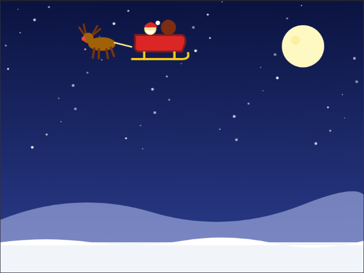
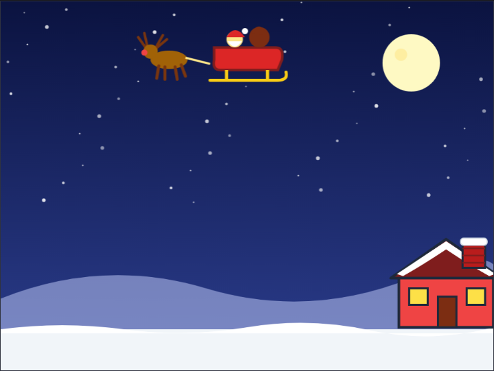
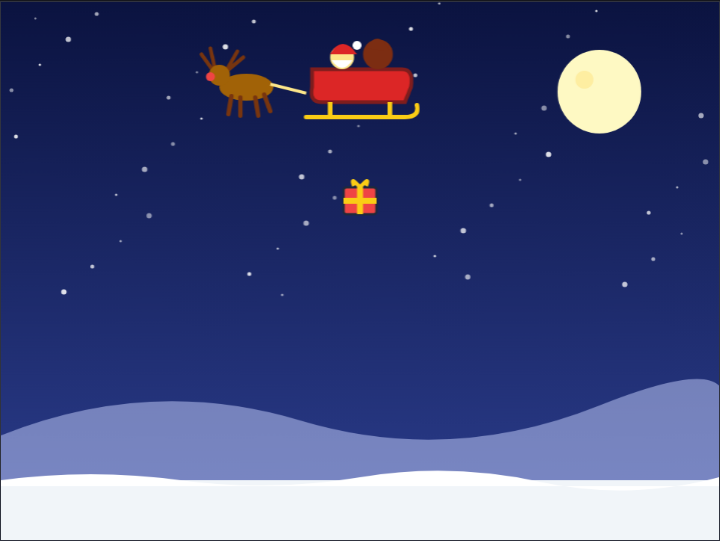
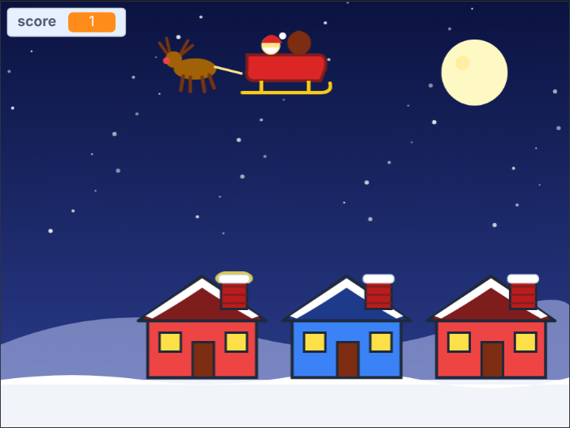
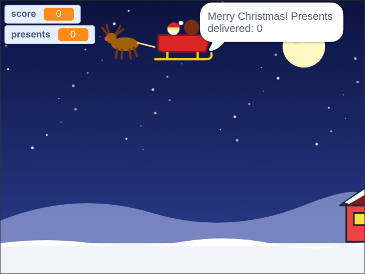
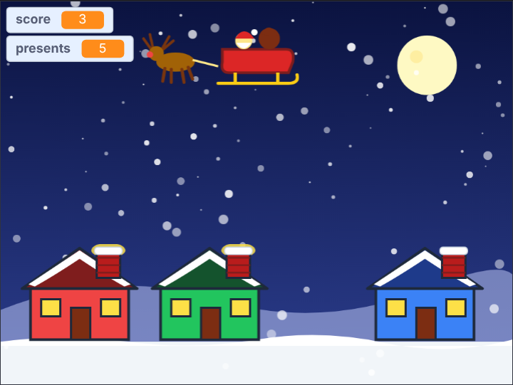

<title>Chimney Drop Tutorial</title>
<meta name="claude:viewport-fit-sides" content="cover">
<link rel="preconnect" href="https://fonts.googleapis.com">
<link rel="stylesheet" href="https://fonts.googleapis.com/css2?family=Fredoka:wght@500;600&family=Atkinson+Hyperlegible:ital,wght@0,400;0,700;1,400&family=JetBrains+Mono:wght@400&display=swap">
<style>
/* Layout: one reading column; each step is a numbered section: the big idea, the blocks, a picture and a checkpoint file. */
:root {
  --bg: #f4f3fa; --surface: #ffffff; --fg: #1f1d33; --muted: #5c5a74; --line: #dddbea;
  --accent: #3b3f9e; --accent-soft: #e6e6fa; --drone: #d97706; --code-bg: #f8f7fd;
  --display: "Fredoka", "Trebuchet MS", system-ui, sans-serif;
  --body: "Atkinson Hyperlegible", "Segoe UI", system-ui, sans-serif;
  --mono: "JetBrains Mono", ui-monospace, Consolas, monospace;
}
@media (prefers-color-scheme: dark) { :root:not([data-theme="light"]) {
  --bg: #13121f; --surface: #1c1a2c; --fg: #ebe9f7; --muted: #a6a3bf; --line: #312e47;
  --accent: #a5a8ff; --accent-soft: #23244a; --drone: #fbbf24; --code-bg: #232036; color-scheme: dark; } }
:root[data-theme="dark"] {
  --bg: #13121f; --surface: #1c1a2c; --fg: #ebe9f7; --muted: #a6a3bf; --line: #312e47;
  --accent: #a5a8ff; --accent-soft: #23244a; --drone: #fbbf24; --code-bg: #232036; color-scheme: dark; }

body { background: var(--bg); color: var(--fg); font: 18px/1.6 var(--body);
  padding-left: max(16px, env(safe-area-inset-left, 0px)); padding-right: max(16px, env(safe-area-inset-right, 0px)); padding-block: 40px 72px; }
main { max-width: 760px; margin: 0 auto; display: grid; gap: 48px; }
main > *, .step > *, .stack > *, .intro > * { min-width: 0; }
h1, h2, h3 { font-family: var(--display); font-weight: 600; text-wrap: balance; margin: 0; line-height: 1.15; }
h1 { font-size: clamp(2rem, 6vw, 2.9rem); }
h2 { font-size: 1.7rem; }
h3 { font-size: 1.15rem; font-weight: 500; }
p { margin: 0; max-width: 66ch; }
a { color: var(--accent); }
code { font: 0.88em var(--mono); background: var(--code-bg); padding: 1px 5px; border-radius: 4px; overflow-wrap: anywhere; }
.eyebrow { font: 600 0.78rem var(--body); letter-spacing: 0.08em; text-transform: uppercase; color: var(--drone); }
.stack { display: grid; gap: 16px; min-width: 0; }
.intro { display: grid; gap: 14px; }
.intro p { color: var(--muted); font-size: 1.08rem; }

.plan { list-style: none; margin: 0; padding: 0; display: grid; gap: 6px; counter-reset: plan; }
.plan li { display: flex; flex-wrap: wrap; align-items: baseline; gap: 4px 12px; padding: 8px 12px; border-radius: 6px; counter-increment: plan; }
.plan li::before { content: counter(plan); font: 600 0.95rem var(--display); color: var(--muted); width: 1.4em; }
.plan .name { font-weight: 700; }
.plan a { text-decoration: none; }
.plan a:hover .name, .plan a:focus-visible .name { text-decoration: underline; }
.plan .what { color: var(--muted); flex: 1 1 220px; }

.step { display: grid; gap: 20px; border-top: 2px solid var(--line); padding-top: 32px; }
.step-head { display: flex; align-items: center; gap: 14px; }
.num { flex: none; width: 44px; height: 44px; border-radius: 50%; display: grid; place-items: center;
  background: var(--accent); color: var(--surface); font: 600 1.3rem var(--display); }
ol.do { margin: 0; padding-left: 1.3em; display: grid; gap: 8px; max-width: 66ch; }

.blocks-panel { background: var(--surface); border: 1px solid var(--line); border-radius: 8px; padding: 16px; overflow-x: auto; }
.blocks-panel .label { font: 700 0.78rem var(--body); letter-spacing: 0.06em; text-transform: uppercase; color: var(--muted); margin-bottom: 8px; }
pre.blocks { margin: 0; font: 13px var(--mono); white-space: pre; }

.note { border-left: 3px solid var(--drone); padding: 2px 0 2px 14px; color: var(--fg); }
.note b { color: var(--drone); }
figure { margin: 0; display: grid; gap: 8px; }
figure img { width: 100%; border-radius: 8px; border: 1px solid var(--line); display: block; }
figcaption { font-size: 0.9rem; color: var(--muted); }

.table-wrap { overflow-x: auto; }
table { border-collapse: collapse; font-variant-numeric: tabular-nums; min-width: 420px; }
th, td { text-align: right; padding: 6px 14px; border-bottom: 1px solid var(--line); }
th:first-child, td:first-child { text-align: left; }
th { font-size: 0.82rem; color: var(--muted); font-weight: 700; }

.checkpoint { display: flex; flex-wrap: wrap; align-items: center; gap: 10px 16px; background: var(--surface);
  border: 1px solid var(--line); border-radius: 8px; padding: 12px 16px; }
.checkpoint p { flex: 1 1 260px; color: var(--muted); font-size: 0.95rem; }
.btn { display: inline-block; font-weight: 700; text-decoration: none; color: var(--surface); background: var(--accent);
  padding: 8px 16px; border-radius: 6px; white-space: nowrap; }
.btn:hover, .btn:focus-visible { outline: 3px solid var(--accent-soft); outline-offset: 1px; }
.try { margin: 0; padding-left: 1.3em; display: grid; gap: 6px; }
svg.coords text { font: 11px var(--body); fill: var(--muted); }
.scripts { display: flex; flex-wrap: wrap; gap: 12px; align-items: flex-start; }
.scripts .blocks-panel { flex: 0 1 auto; max-width: 100%; min-width: 0; }
.tag { font-size: 0.7rem; font-weight: 700; letter-spacing: 0.04em; padding: 1px 7px; border-radius: 999px; margin-left: 6px; }
.tag.new { background: var(--accent); color: var(--surface); }
.tag.changed { border: 1px solid var(--drone); color: var(--drone); }
.flow { list-style: none; margin: 0; padding: 0; display: flex; flex-wrap: wrap; gap: 8px; counter-reset: none; }
.flow li { display: grid; gap: 2px; padding: 10px 14px; border-radius: 8px; background: var(--surface); border: 1px solid var(--line);
  flex: 1 1 130px; min-width: 0; position: relative; }
.flow li b { font: 600 1.05rem var(--display); color: var(--accent); }
.flow li span { font-size: 0.85rem; color: var(--muted); }
footer { color: var(--muted); font-size: 0.92rem; border-top: 2px solid var(--line); padding-top: 24px; }
.idea { background: var(--accent-soft); border-radius: 8px; padding: 12px 16px; display: grid; gap: 4px; max-width: 66ch; }
.make { display: grid; gap: 4px; max-width: 66ch; font-size: 0.95rem; }
.make b { color: var(--drone); }
.idea b { font: 600 1rem var(--display); color: var(--accent); }
</style>

<main>
  <header class="intro">
    <span class="eyebrow">Scratch tutorial for kids (8+) · 6 short steps · basic blocks only</span>
    <h1>Chimney Drop</h1>
    <p>It's Christmas Eve! Fly Santa's sleigh over the town and drop the presents down the chimneys. But the town keeps moving, so you have to drop each present a little early. Every sprite has its own scripts: green flag, forever, key presses, a broadcast, clones and touching. No custom blocks, no lists.</p>
    <p>Every step is a game you can play, and every step has a file you can download if you get stuck. You need the Scratch editor: <a href="https://scratch.mit.edu/projects/editor/">scratch.mit.edu/projects/editor</a>.</p>
    <div class="checkpoint">
      <p>Start here: the starter project has the sleigh, the houses, the chimneys, the presents, the snow and the night sky. No code yet.</p>
      <a class="btn" href="https://github.com/AJosephsen/MyTemporaryJunk/raw/main/scratch/tutorials/chimney-drop/starter.sb3">Download starter.sb3</a>
    </div>
  </header>

  <section class="stack" aria-label="Steps">
    <h3>The steps</h3>
    <ol class="plan">
      <li><a href="#step-1"><span class="name">The sleigh</span></a><span class="what">Keys move a sprite</span></li>
      <li><a href="#step-2"><span class="name">Houses</span></a><span class="what">A clone of another sprite</span></li>
      <li><a href="#step-3"><span class="name">Presents</span></a><span class="what">A clone that falls</span></li>
      <li><a href="#step-4"><span class="name">Delivered!</span></a><span class="what">Touching</span></li>
      <li><a href="#step-5"><span class="name">The sack</span></a><span class="what">Lives</span></li>
      <li><a href="#step-6"><span class="name">Snow and speed</span></a><span class="what">Lots of clones, and one number makes it harder</span></li>
    </ol>
  </section>

  <section class="step" id="step-1">
    <div class="step-head"><span class="num">1</span><h2>The sleigh</h2></div>
    <div class="idea"><b>Big idea: keys move a sprite</b><span>Santa's sleigh flies over the town. Two <b>if key pressed</b> blocks in a <b>forever</b> loop move it: <b>change x by -5</b> for left, <b>5</b> for right. Two more <b>if</b>s stop it at the sides.</span></div>
    <p class="make"><span><b>Make:</b> nothing new yet. The starter has the Sleigh, House, Chimney, Present and Snow sprites and the night sky.</span></p>
    <div class="scripts">
<div class="blocks-panel"><div class="label">Sleigh <span class="tag new">new</span></div>
<pre class="blocks">when flag clicked
go to x: (0) y: (125)
forever
  if &lt;key (left arrow v) pressed?&gt; then
    change x by (-5)
  end
  if &lt;key (right arrow v) pressed?&gt; then
    change x by (5)
  end
  if &lt;(x position) &lt; (-180)&gt; then
    set x to (-180)
  end
  if &lt;(x position) &gt; (180)&gt; then
    set x to (180)
  end
end</pre></div>
</div>
    <ul class="do">
      <li>The sleigh's costume is drawn so its centre is under Santa's sack: later, the presents drop from exactly there.</li>
      <li>Try other speeds: <b>change x by 8</b> makes a nimble sleigh.</li>
    </ul>
    <figure>
      
      <figcaption>Left and right arrows move the sleigh.</figcaption>
    </figure>
    <div class="checkpoint">
      <p>Stuck? This is the project at the end of step 1.</p>
      <a class="btn" href="https://github.com/AJosephsen/MyTemporaryJunk/raw/main/scratch/tutorials/chimney-drop/step1.sb3">Download step1.sb3</a>
    </div>
  </section>
  <section class="step" id="step-2">
    <div class="step-head"><span class="num">2</span><h2>Houses</h2></div>
    <div class="idea"><b>Big idea: a clone of another sprite</b><span>The House sprite hides at the right edge and, every 2 to 4 seconds, makes a <b>clone of itself</b> and a <b>clone of Chimney</b>. A Chimney clone starts with <b>go to House</b>, so it lands right on the new house. Then both clones move left at the same speed, and every chimney stays on its roof.</span></div>
    <p class="make"><span><b>Make:</b> nothing new: the scripts go on the House and the Chimney.</span></p>
    <div class="scripts">
<div class="blocks-panel"><div class="label">House <span class="tag new">new</span></div>
<pre class="blocks">when flag clicked
hide
go to x: (280) y: (-94)
forever
  wait (pick random (2) to (4)) seconds
  switch costume to (pick random (1) to (3))
  create clone of (myself v)
  create clone of (Chimney v)
end</pre></div>
<div class="blocks-panel"><div class="label">House <span class="tag new">new</span></div>
<pre class="blocks">when I start as a clone
show
repeat until &lt;(x position) &lt; (-270)&gt;
  change x by (-2)
end
delete this clone</pre></div>
<div class="blocks-panel"><div class="label">Chimney <span class="tag new">new</span></div>
<pre class="blocks">when flag clicked
hide</pre></div>
<div class="blocks-panel"><div class="label">Chimney <span class="tag new">new</span></div>
<pre class="blocks">when I start as a clone
go to (House v)
switch costume to (chimney v)
show
repeat until &lt;(x position) &lt; (-270)&gt;
  change x by (-2)
end
delete this clone</pre></div>
</div>
    <ul class="do">
      <li>The House and Chimney costumes are the same size: the chimney is drawn where it sits on the roof. That is why <b>go to House</b> puts it in the right place.</li>
      <li><b>switch costume to pick random 1 to 3</b> gives red, blue and green houses.</li>
      <li>A clone that gets past x = -270 deletes itself, so they don't pile up.</li>
      <li>Why not a <b>broadcast</b>? A broadcast reaches the clones too: every house on the screen would make a new house, and soon there would be hundreds!</li>
    </ul>
    <figure>
      
      <figcaption>The town scrolls past.</figcaption>
    </figure>
    <div class="checkpoint">
      <p>Stuck? This is the project at the end of step 2.</p>
      <a class="btn" href="https://github.com/AJosephsen/MyTemporaryJunk/raw/main/scratch/tutorials/chimney-drop/step2.sb3">Download step2.sb3</a>
    </div>
  </section>
  <section class="step" id="step-3">
    <div class="step-head"><span class="num">3</span><h2>Presents</h2></div>
    <div class="idea"><b>Big idea: a clone that falls</b><span><b>when space key pressed</b>, the sleigh makes a clone of the Present. The clone <b>goes to the Sleigh</b>, picks a random wrapping, and falls: <b>change y by -5</b> until it reaches the snow.</span></div>
    <p class="make"><span><b>Make:</b> nothing new.</span></p>
    <div class="scripts">
<div class="blocks-panel"><div class="label">Sleigh <span class="tag new">new</span></div>
<pre class="blocks">when [space v] key pressed
create clone of (Present v)
wait (0.4) seconds</pre></div>
<div class="blocks-panel"><div class="label">Present <span class="tag new">new</span></div>
<pre class="blocks">when flag clicked
hide</pre></div>
<div class="blocks-panel"><div class="label">Present <span class="tag new">new</span></div>
<pre class="blocks">when I start as a clone
go to (Sleigh v)
switch costume to (pick random (1) to (3))
show
repeat until &lt;(y position) &lt; (-130)&gt;
  change y by (-5)
end
delete this clone</pre></div>
</div>
    <ul class="do">
      <li><b>wait 0.4 seconds</b> after making a present: holding Space drops one present at a time.</li>
      <li>The houses keep moving while a present falls. Drop it a little <b>before</b> the chimney is under you!</li>
    </ul>
    <figure>
      
      <figcaption>Space drops a present.</figcaption>
    </figure>
    <div class="checkpoint">
      <p>Stuck? This is the project at the end of step 3.</p>
      <a class="btn" href="https://github.com/AJosephsen/MyTemporaryJunk/raw/main/scratch/tutorials/chimney-drop/step3.sb3">Download step3.sb3</a>
    </div>
  </section>
  <section class="step" id="step-4">
    <div class="step-head"><span class="num">4</span><h2>Delivered!</h2></div>
    <div class="idea"><b>Big idea: touching</b><span>A falling present now stops when it <b>touches</b> a Chimney or a House. On a chimney it adds 1 to the <b>score</b>, and the chimney, which checks <b>touching Present</b> as it moves, switches to its glowing costume.</span></div>
    <p class="make"><span><b>Make:</b> the variable <code>score</code> (for all sprites).</span></p>
    <div class="scripts">
<div class="blocks-panel"><div class="label">Sleigh <span class="tag changed">changed</span></div>
<pre class="blocks">when flag clicked
go to x: (0) y: (125)
set [score v] to (0)
forever
  if &lt;key (left arrow v) pressed?&gt; then
    change x by (-5)
  end
  if &lt;key (right arrow v) pressed?&gt; then
    change x by (5)
  end
  if &lt;(x position) &lt; (-180)&gt; then
    set x to (-180)
  end
  if &lt;(x position) &gt; (180)&gt; then
    set x to (180)
  end
end</pre></div>
<div class="blocks-panel"><div class="label">Chimney <span class="tag changed">changed</span></div>
<pre class="blocks">when I start as a clone
go to (House v)
switch costume to (chimney v)
show
repeat until &lt;(x position) &lt; (-270)&gt;
  change x by (-2)
  if &lt;touching (Present v)?&gt; then
    switch costume to (glow v)
  end
end
delete this clone</pre></div>
<div class="blocks-panel"><div class="label">Present <span class="tag changed">changed</span></div>
<pre class="blocks">when I start as a clone
go to (Sleigh v)
switch costume to (pick random (1) to (3))
show
repeat until &lt;&lt;&lt;touching (Chimney v)?&gt; or &lt;touching (House v)?&gt;&gt; or &lt;(y position) &lt; (-130)&gt;&gt;
  change y by (-5)
end
if &lt;touching (Chimney v)?&gt; then
  change [score v] by (1)
  wait (0.05) seconds
end
delete this clone</pre></div>
</div>
    <ul class="do">
      <li>The present <b>waits 0.05 seconds</b> before it deletes itself. Without that wait it could vanish before the chimney notices it!</li>
      <li>The sleigh sets <b>score</b> to 0 when the green flag is clicked.</li>
    </ul>
    <figure>
      
      <figcaption>Hit a chimney: it glows and you score.</figcaption>
    </figure>
    <div class="checkpoint">
      <p>Stuck? This is the project at the end of step 4.</p>
      <a class="btn" href="https://github.com/AJosephsen/MyTemporaryJunk/raw/main/scratch/tutorials/chimney-drop/step4.sb3">Download step4.sb3</a>
    </div>
  </section>
  <section class="step" id="step-5">
    <div class="step-head"><span class="num">5</span><h2>The sack</h2></div>
    <div class="idea"><b>Big idea: lives</b><span>Santa's sack holds 5 presents for missing. A present that lands on a roof or in the snow is lost: <b>change presents by -1</b>. When <b>presents</b> is 0, Santa says how many he delivered, and then <b>stop all</b>.</span></div>
    <p class="make"><span><b>Make:</b> the variable <code>presents</code>.</span></p>
    <div class="scripts">
<div class="blocks-panel"><div class="label">Sleigh <span class="tag changed">changed</span></div>
<pre class="blocks">when flag clicked
go to x: (0) y: (125)
set [score v] to (0)
set [presents v] to (5)
forever
  if &lt;key (left arrow v) pressed?&gt; then
    change x by (-5)
  end
  if &lt;key (right arrow v) pressed?&gt; then
    change x by (5)
  end
  if &lt;(x position) &lt; (-180)&gt; then
    set x to (-180)
  end
  if &lt;(x position) &gt; (180)&gt; then
    set x to (180)
  end
  if &lt;(presents) = (0)&gt; then
    say (join [Merry Christmas! Presents delivered: ] (score)) for (3) seconds
    stop [all v]
  end
end</pre></div>
<div class="blocks-panel"><div class="label">Present <span class="tag changed">changed</span></div>
<pre class="blocks">when I start as a clone
go to (Sleigh v)
switch costume to (pick random (1) to (3))
show
repeat until &lt;&lt;&lt;touching (Chimney v)?&gt; or &lt;touching (House v)?&gt;&gt; or &lt;(y position) &lt; (-130)&gt;&gt;
  change y by (-5)
end
if &lt;touching (Chimney v)?&gt; then
  change [score v] by (1)
  wait (0.05) seconds
end
if &lt;not &lt;touching (Chimney v)?&gt;&gt; then
  change [presents v] by (-1)
end
delete this clone</pre></div>
</div>
    <ul class="do">
      <li><b>if not touching Chimney</b>: one block covers both kinds of miss, the roof and the snow.</li>
      <li>Say it first, then <b>stop all</b>: <b>stop all</b> also clears speech bubbles.</li>
    </ul>
    <figure>
      
      <figcaption>Five misses and the night is over.</figcaption>
    </figure>
    <div class="checkpoint">
      <p>Stuck? This is the project at the end of step 5.</p>
      <a class="btn" href="https://github.com/AJosephsen/MyTemporaryJunk/raw/main/scratch/tutorials/chimney-drop/step5.sb3">Download step5.sb3</a>
    </div>
  </section>
  <section class="step" id="step-6">
    <div class="step-head"><span class="num">6</span><h2>Snow and speed</h2></div>
    <div class="idea"><b>Big idea: lots of clones, and one number makes it harder</b><span>A <b>Snow</b> sprite makes a clone every 0.1 seconds: each flake starts at a random place at the top, with a random size and see-through-ness, and drifts down. And the houses now move by <b>speed</b>, which is <b>2 + score ÷ 5</b>: the more you deliver, the faster the town goes by.</span></div>
    <p class="make"><span><b>Make:</b> the variable <code>speed</code>.</span></p>
    <div class="scripts">
<div class="blocks-panel"><div class="label">Sleigh <span class="tag changed">changed</span></div>
<pre class="blocks">when flag clicked
go to x: (0) y: (125)
set [score v] to (0)
set [presents v] to (5)
set [speed v] to (2)
forever
  if &lt;key (left arrow v) pressed?&gt; then
    change x by (-5)
  end
  if &lt;key (right arrow v) pressed?&gt; then
    change x by (5)
  end
  if &lt;(x position) &lt; (-180)&gt; then
    set x to (-180)
  end
  if &lt;(x position) &gt; (180)&gt; then
    set x to (180)
  end
  set [speed v] to ((2) + ((score) / (5)))
  if &lt;(presents) = (0)&gt; then
    say (join [Merry Christmas! Presents delivered: ] (score)) for (3) seconds
    stop [all v]
  end
end</pre></div>
<div class="blocks-panel"><div class="label">House <span class="tag changed">changed</span></div>
<pre class="blocks">when I start as a clone
show
repeat until &lt;(x position) &lt; (-270)&gt;
  change x by ((speed) * (-1))
end
delete this clone</pre></div>
<div class="blocks-panel"><div class="label">Chimney <span class="tag changed">changed</span></div>
<pre class="blocks">when I start as a clone
go to (House v)
switch costume to (chimney v)
show
repeat until &lt;(x position) &lt; (-270)&gt;
  change x by ((speed) * (-1))
  if &lt;touching (Present v)?&gt; then
    switch costume to (glow v)
  end
end
delete this clone</pre></div>
<div class="blocks-panel"><div class="label">Snow <span class="tag new">new</span></div>
<pre class="blocks">when flag clicked
hide
forever
  create clone of (myself v)
  wait (0.1) seconds
end</pre></div>
<div class="blocks-panel"><div class="label">Snow <span class="tag new">new</span></div>
<pre class="blocks">when I start as a clone
go to x: (pick random (-240) to (240)) y: (180)
set size to (pick random (50) to (120)) %
set [ghost v] effect to (pick random (0) to (50))
show
repeat until &lt;(y position) &lt; (-170)&gt;
  change y by (-1.5)
  change x by (pick random (-1) to (1))
end
delete this clone</pre></div>
</div>
    <ul class="do">
      <li><b>change x by pick random -1 to 1</b> makes the flakes wobble as they fall.</li>
      <li>This is the whole game!</li>
    </ul>
    <figure>
      
      <figcaption>Merry Christmas! This is the whole game.</figcaption>
    </figure>
    <div class="checkpoint">
      <p>Stuck? This is the project at the end of step 6.</p>
      <a class="btn" href="https://github.com/AJosephsen/MyTemporaryJunk/raw/main/scratch/tutorials/chimney-drop/step6.sb3">Download step6.sb3</a>
    </div>
  </section>

  <section class="stack">
    <h3>Make it your own</h3>
    <ul class="try">
      <li>A golden present: sometimes the Present picks a gold costume and gives 3 points.</li>
      <li>Play a sound (a bell, a "Ho ho ho") when a present goes down a chimney.</li>
      <li>Some houses have no chimney: in the Chimney's clone script, <b>hide</b> it now and then with <b>if pick random 1 to 4 = 1</b>.</li>
      <li>Change <b>2 + score ÷ 5</b>. What happens with ÷ 2? With ÷ 10?</li>
    </ul>
  </section>

  <footer>Made with the Scratch workbench in this repository. The blocks on this page are drawn from the real project files, so they always match the downloads; the last step is the finished game.</footer>
</main>

<script src="https://cdn.jsdelivr.net/npm/scratchblocks@3.6.4/build/scratchblocks.min.js"></script>
<script>
  scratchblocks.renderMatching("pre.blocks", { style: "scratch3", languages: ["en"], scale: 0.75 });
</script>
